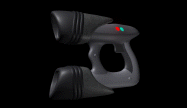

Weapons

Light Pistol
This pistol is the standard emergency weapon that Crater carries in his boot holster or has strapped under his seat. Its small, tough frame has been proven time and again to be ideal in dealing with surprise problems – though it is typically used as a backup when the regular primary weapon has been disabled. Although its disruptive power is actually weaker than that of the Modified Laser Welder, the laser blast emitted from the Light Pistol has a far greater range.

Twin Disrupter
This weapon has twin-mounted disruptive lasers that feed asynchronously off of the power source, reducing the power leakage and increasing the damage potential. It provides a good punch for the Mega-Joule usage.

Full Automatic Pistol
This weapon fires slugs at an ungodly rate, reducing the enemies in front of it to pieces. However, it uses bullets like there is no tomorrow, and should only be used in the most dire of situations or when a bullet stockpile has just been located. Blocked by: the Inertia shield.

Impaction Cannon
A weapon of untested strength and power, the Impaction Cannon is a mish-mash of ancient alien technology and Imperium ingenuity. It emits a highly focused laser pulse surrounded by a phase-dampened sub-nuclear envelope, perfect for punching through albedo shields and robotic matter. Its Mega-Joule cost is very high, but the show is well worth the wait.

Tri-Spread Gun
This is the level 3 version of the Light Pistol. The only difference other than doing more damage is that the Tri-Spread gun emits 3 lasers. Blocked by: the Albedo shield.

Autonomous Nuclear Disrupter
This large weapon spits forth a translucent, glowing cloud that emits massively duped electrons at enemy targets. What makes this weapon especially devastating is the intelligence that the cloud exhibits. It follows its target through hallways and around corners until it consumes itself or its target. The cloud does move slowly, so if the target runs away (and keeps running) the cloud (perhaps) can be avoided.
“Crater” in the first description was the working name of the hero during development.